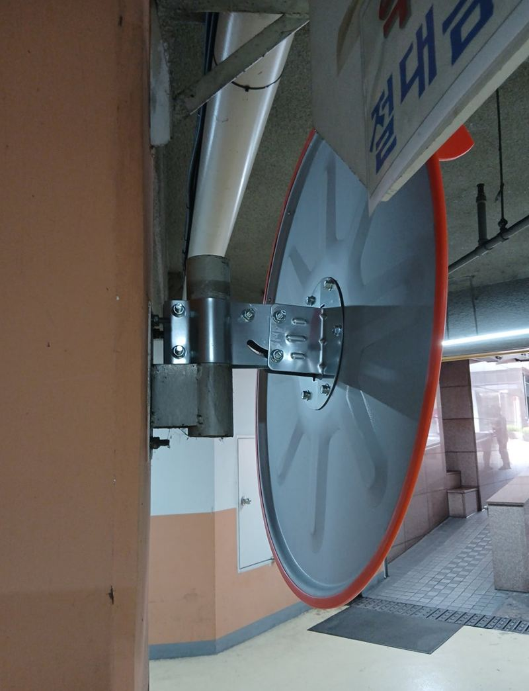
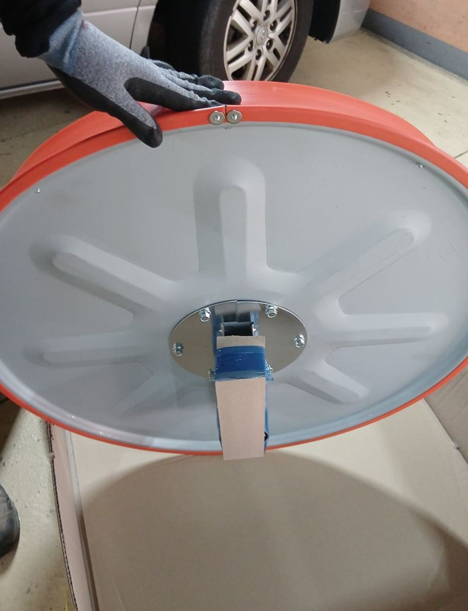
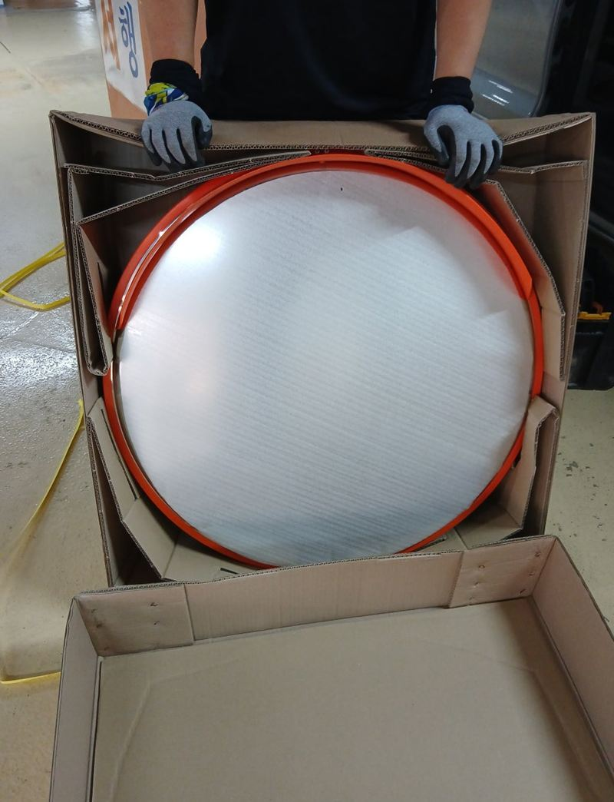
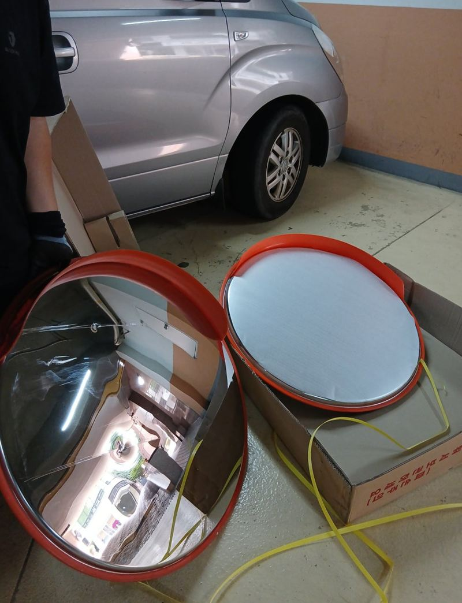
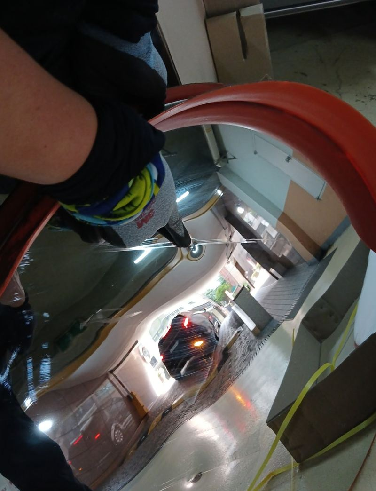
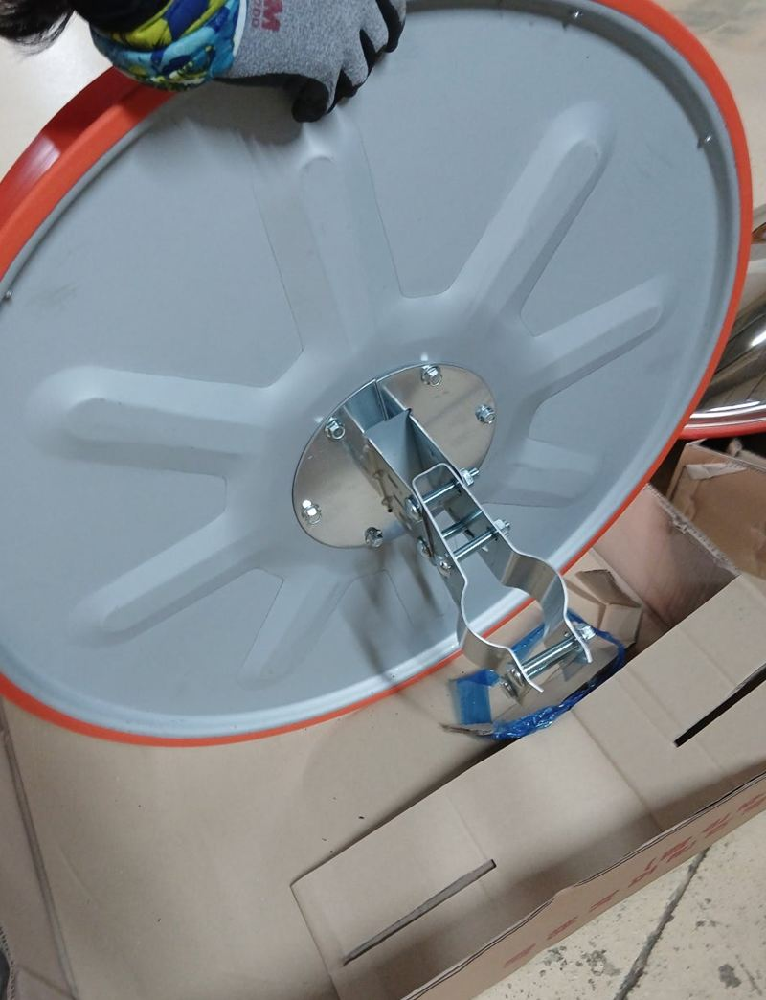

서초 반사경 설치 목적과 위치 정하는 방법
← 밀어서 전후 비교 →
"지하주차장에서 탑차로 후진하다 반사경을 박았어요. 관리실에서 바로 바꿔 달라는데 오늘 될까요?" 서초 방배동 아파트에 납품을 왔던 기사님의 급한 연락이었어요. 변상까지 해야 하는 상황이라 마음이 급하셨어요. 가 보니 거울은 깨졌지만 벽에 붙은 프레임은 멀쩡했어요. 프레임은 그대로 두고 800파이 거울만 새로 달아, 코너가 잘 보이도록 각도를 다시 맞췄어요.
| 현장 | 서울 서초구 방배동 아파트 지하주차장 코너 |
|---|---|
| 원인 | 탑차 후진 중 충돌로 거울 파손 |
| 한 일 | 안전 구역 확보 → 깨진 거울 탈착·잔여 부품 정리 → 프레임 상태 확인 → 새 거울 장착 → 나사 재체결 → 반사각 점검 → 관리실 확인 |
| 규격 | 800파이 실내 반사경 |
지하주차장 반사경이 필요한 이유
지하주차장은 조명이 어둡고 기둥과 꺾이는 길이 많아, 운전석에서 코너 너머가 잘 안 보여요. 반사경은 그 사각지대를 비춰 차끼리, 차와 사람이 부딪히지 않게 해 줘요.
- 코너·교차 지점들어오는 차와 나가는 차가 서로를 미리 봐요.
- 후진할 때뒤쪽 통로를 확인할 수 있어요.
- 어린이 보호구역키 작은 아이가 차 사이에서 나오는 걸 먼저 봐요.
- 좁은 골목·물류 통로트럭과 지게차가 오가는 곳의 충돌을 줄여요.
프레임은 살리고 거울만 바꾸기
반사경이 부서졌다고 늘 통째로 바꾸는 건 아니에요. 벽에 붙은 브라켓과 프레임이 휘지 않았으면 거울만 갈면 되고, 그만큼 부담도 줄어요. 이 현장도 프레임을 확인해 보니 쓸 만해서 거울만 교체했어요.
깨진 거울 떼기
차가 지나다니는 통로라 작업 구역을 먼저 막고, 부서진 거울과 남은 부품을 걷었어요.


새 거울 준비
같은 800파이 규격 거울을 포장에서 꺼내 고정부를 확인했어요.


장착과 각도
프레임에 걸어 나사를 다시 조이고, 차가 후진하는 방향에서 코너가 보이도록 각도와 높이를 맞췄어요.


기사님은 "관리실에서 바로 바꿔 달라고 해서 여기저기 찾던 중이었는데, 이렇게 빨리 처리될 줄 몰랐다"며 고마워하셨어요.
반사경 위치와 크기 정하는 기준
| 기준 | 내용 |
|---|---|
| 설치 장소 | 실내형·실외형에 따라 재질과 내구성이 달라요 |
| 모양 | 원형·사각형, 벽 공간과 비출 범위에 맞춰요 |
| 크기 | 보통 600·800·1000파이, 비출 거리가 멀수록 크게 |
| 위치 | 차의 회전 반경과 사각지대를 함께 봐요 |
| 고정 | 충격에 흔들리지 않게, 나사가 튀어나오지 않게 |
교체 비용은 거울만인지 프레임까지인지, 벽 고정을 더 해야 하는지, 실내·실외형과 크기에 따라 달라져요.
급할 때 빨리 처리하려면
지하주차장 반사경은 관리실에서 바로 교체를 요구하는 경우가 많아요. 이럴 때 부서진 반사경 정면, 벽에 붙은 브라켓, 대략의 크기를 사진으로 먼저 보내 주시면 맞는 규격을 챙겨 갈 수 있어요. 규격만 맞으면 이 현장처럼 짧은 시간에 끝나요.
반사경을 부딪힌 경우라면 관리실과 처리 방법을 미리 이야기해 두세요. 교체가 끝난 뒤 관리실에서 직접 확인할 수 있도록 함께 보여 드리면 일이 깔끔하게 마무리돼요.
지하주차장 반사경 질문
사고를 낸 쪽이 직접 불러도 되나요?
네, 이 현장처럼 부딪힌 분이 연락해 관리실과 확인하며 진행하는 경우도 많아요.
사각 반사경도 있나요?
벽 폭이 좁거나 길게 비춰야 하는 곳에 사각형을 쓰기도 해요.
프레임까지 휘었으면요?
브라켓과 프레임을 함께 바꾸고 벽 고정을 다시 해요.
반사경이 너무 높게 달려 있어요.
운전자 눈높이에 맞게 내려 다시 달 수 있어요.
야외 반사경과 같은 제품인가요?
실외용은 햇빛과 비에 강한 재질을 써요. 장소에 맞춰 골라요.
재고가 있어야 바로 바꿀 수 있나요?
규격 재고가 있는지 먼저 확인해요. 크기를 알려주시면 빨라요.
다른 반사경·출차등 현장
부서진 반사경과 벽 브라켓을 찍고, 크기를 알면 함께 알려주세요.
전화 상담 010-4517-9872